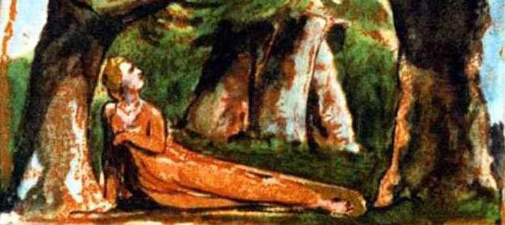

Kahince görüyorum
Geleceği,
Uykudan uyanacak yeryüzü,
(Gömün derinlere bu sözü)
Kalkıp arayacak
Sevecen yaratanını,
Ve o yabani çöl
Zarif bir bahçe olacak.
Yazların parladığı
Ve asla solmadığı,
O güney ikliminde,
Uzanır tatlı Lyca.
Yedi yaz geçti
Dedi tatlı Lyca,
Vahşi kuşların şarkısını,
Dinleyip çok gezmişti.
‘Tatlı uyku gel bana
Bu ağacın altında,
Nerede uyur diye Lyca?
Ağlar mı anne baba?
‘Yabani çölde kaybolmuş
Küçük kızınız sizin,
Ağlıyorsa annesi,
Nasıl uyusun Lyca?
‘Sızlıyorsa kalbi,
Bırakın uyansın Lyca,
Eğer annem uyursa,
Ağlamayacak Lyca.
‘Çatıyor, çatıyor kaşlarını gece,
Bu parlak çölün üstüne,
Yumayım gözlerimi,
Doğsun izin ver ayın.’
Uzanmış yatıyordu Lyca,
Çıkarken yırtıcı hayvanlar,
Derin mağaralardan,
Dikkatle baktılar uyuyan kıza.
Öylece duruyordu aslan kral,
Dikmiş gözlerini bakireye,
Kutsal toprağın üstünde
Sonra başladı sıçramaya.
Uzanan Lyca’nın, leoparlar,
Kaplanlar oynuyor çevresinde,
Derken yaşlı aslan,
Savurdu altın yelesini
Ve kızın bağrını yaladı,
Ve sonra boynunu yaladı,
Gözlerindeki Melisa’dan,
Yakut yaşlar damladı,
Sıyırırken dişi aslan
İnce giysisini.
Ve taşıdılar inlerine,
Uyuyan, çıplak bakireyi.
